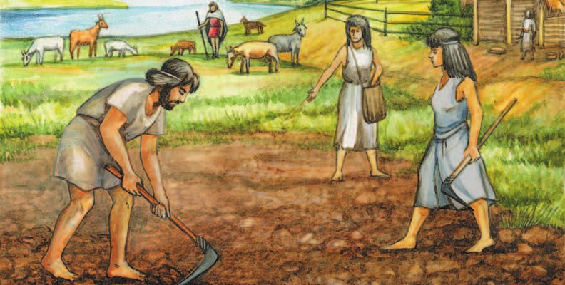
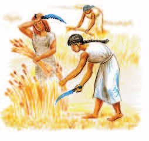
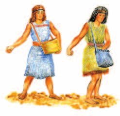
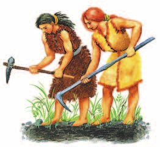
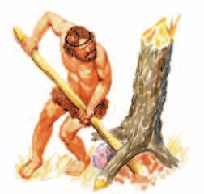
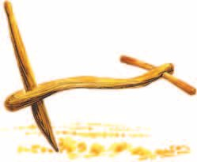
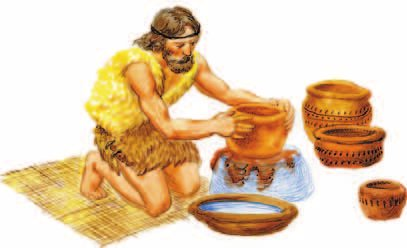
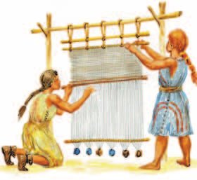
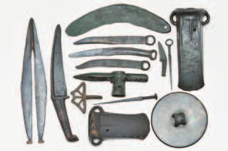

Переход к производящему хозяйству
Ледник отступил, и климат стал почти таким же, как сейчас. Поменялись звери и растения: на месте болот и равнин выросли густые леса. Стада крупных животных ушли на север, мамонты вымерли.
Охотиться теперь приходилось на мелкого зверя — для этого придумали лук и стрелы, а для рыбы — сеть. Это случилось в мезолите. Тогда же помощником на охоте и верным другом человека стала собака.
Примерно 10 тысяч лет назад начался — новый каменный век. С него начинается : человек перестал только брать готовое и начал сам производить то, что ему нужно.
С отступлением ледника на Земле установился климат, близкий к современному. Изменился животный и растительный мир: на месте болот и равнин выросли густые леса. Стада крупных животных ушли на север, некоторые виды вымерли, например мамонты. Для охоты на мелких животных человек изобрёл лук и стрелы, для ловли рыбы — сеть. Это произошло в период мезолита. Тогда же помощником на охоте и верным другом человека стала собака.
Приблизительно 10 тысяч лет назад начался период, который учёные называют , то есть «новым каменным веком». С этого времени начинается время . Его главная особенность — переход от охоты и собирательства к производству жизненно необходимых продуктов.
Люди заметили: зёрна, упавшие в землю, прорастают и дают новые зёрна. Значит, можно закладывать их в почву самому и получать урожай. Так появилось .
Почву рыхлили деревянными — это палка с сучком. Урожай срезали жатвенными ножами из каменных пластинок.
Из-за земледелия люди стали жить на одном месте — . Первые земледельцы жили в Передней Азии.
Охотники тоже перешли к новому: научились приручать диких животных. Появились козы, овцы, потом свиньи, коровы, ослы. Их разводили ради мяса, молока, кожи и шерсти. Так появилось .
Древние люди заметили, что зёрна, упавшие в землю, прорастают и дают новые зёрна. Закладывая их в почву, человек получал урожай. Так возникло . Почву для посева семян обрабатывали деревянными в виде палки с сучком, при сборе урожая использовали жатвенные ножи, сделанные из каменных пластинок.
Занятие земледелием способствовало переходу древних людей к . Первые земледельцы обитали в Передней Азии.
Переход к новому виду хозяйствования произошёл и у охотников. Они научились приручать диких животных. В хозяйстве древних людей появились козы, овцы, позднее — свиньи, коровы, ослы. Их разводили для получения мяса, молока, кожи и шерсти. Так возникло .
▲ 1. Назови правильный порядок земледельческих работ. Объясни свой ответ. 2. Какие орудия использовали древние люди для занятия земледелием?




Рисунки в учебнике идут не по порядку — в этом и задание.
- Чем земледелие отличалось от собирательства?
1. Почему лук и стрелы понадобились именно после отступления ледника?
2. Почему земледелие заставило людей осесть на одном месте?
3. Чем производящее хозяйство отличается от присваивающего?
Новые виды деятельности
В первобытную эпоху всё менялось очень медленно. Проходили тысячи лет, прежде чем у человека появлялись новые умения и менялись занятия.
Придумали деревянный — и земля стала обрабатываться лучше, даже твёрдая. Так началось плужное земледелие. Поля стали больше, урожай — больше, и часть людей освободилась от работы в поле для других дел.
Научились обрабатывать камень, дерево и кость по-новому: пилить, шлифовать, сверлить. На простом ткацком станке стали делать ткань и шить из неё одежду — постепенно она заменила шкуры.
Изменения в первобытную эпоху происходили очень медленно. Проходили тысячелетия, прежде чем у человека появлялись новые навыки и способности, менялись привычки и занятия.
С изобретением деревянного улучшилась обработка земли. Его применение позволяло обрабатывать твёрдую почву. Так началось плужное земледелие. Расширение посевной площади увеличивало урожаи, часть людей освобождалась от земледельческих работ для других занятий.
Древние люди научились обрабатывать камень, дерево, кость такими способами, как пиление, шлифование, сверление и др. На примитивном ткацком станке люди вырабатывали ткань, из которой шили одежду. Постепенно она заменила шкуры животных.

отделилось от земледелия и стало самостоятельным занятием. Ремесленник делал вещи и менял их на еду — и так кормил свою семью, не работая в поле.
Обмен разрастался, в него втягивались соседние общины — иногда за сотни километров друг от друга. Появились люди, которые занимались торговлей, и первые — маршруты, по которым общины обменивались товарами. Так связывались далёкие посёлки с разной культурой.
Произошло отделение от земледелия как самостоятельной деятельности. Ремесленник, изготавливая изделия, смог обменивать их на продукты земледелия и скотоводства, оказался способным обеспечивать свою семью. Развивается обмен, в который постепенно втягиваются соседние общины, иногда разделённые сотнями километров. Появляются люди, занимающиеся торговлей, возникают первые — определённые маршруты, по которым происходил товарообмен между разными общинами. Устанавливаются связи между отдалёнными поселениями, отличающимися своей культурой.


Первые ремёсла возникали постепенно. Глина, размоченная в воде, принимала в руках человека любую форму — и в неолите из неё стали делать сосуды для хранения продуктов. С изобретением гончарного круга изделия из глины — — стали получаться разнообразнее и совершеннее.
Важной дорогой была степная зона Евразии. Там жили разные народы и передавали друг другу способы делать орудия, посуду, транспорт. Кочевники соединяли разобщённые земли и связывали между собой разные культуры.
В 4-м тысячелетии до нашей эры на Востоке изобрели . С ним научились использовать силу животных — появились первые повозки.
Важной транзитной территорией была степная зона Евразии. Здесь обитали различные народы, передававшие друг другу способы производства орудий труда, посуды, транспорта. Кочевники соединяли разобщённые территории, способствовали установлению связей между различными культурами.
В 4-м тысячелетии до н. э. на Востоке люди изобрели . С его помощью они научились использовать тягловую силу животных, и появились первые повозки.
- Какие новые виды деятельности появились в период неолита?
- К каким изменениям в быту людей привело появление керамики и ткачества?
4. Как плуг привёл к появлению ремесленников?
5. Почему ремесленник мог прокормить семью, не выращивая еду?
6. Зачем кочевникам степи была нужна вся Евразия?
Век металлов
Примерно в 4-м тысячелетии до нашей эры люди научились получать из руды, которую находили прямо на поверхности земли, и делать из неё вещи. Время, когда распространились медные орудия, называют энеолитом. Медными орудиями работали наравне с каменными.
3—2-е тысячелетия до нашей эры — начало . Бронзу получали, сплавляя медь с другими металлами: свинцом, оловом, мышьяком.
Как получать из руды, открыли во 2-м тысячелетии до нашей эры. Железными орудиями стало проще обрабатывать дерево: строить жилища, делать суда и колесницы, посуду, мебель, игрушки. Появились новые ремёсла — кузнечное, оружейное. Земли стали обрабатывать больше, и работа шла быстрее.
Древнейшие центры металлургии — Малая Азия, Восточное Средиземноморье и Закавказье.
Приблизительно в 4-м тысячелетии до н. э. древние люди научились получать из руды, которую находили на поверхности земли, и изготавливать из этого металла изделия. Период распространения медных орудий называют энеолитом. Медные орудия использовали наряду с каменными.
3—2-е тысячелетия до н. э. — начало . Бронзу получали из сплава меди с другими металлами, например свинцом, оловом, мышьяком.
Способ получения из руды был открыт во 2-м тысячелетии до н. э. С помощью железных орудий совершенствовалась обработка дерева при строительстве жилищ, сооружении транспортных средств (судов, колесниц и др.), изготовлении разнообразных предметов быта (посуды, мебели, игрушек и др.). С получением древним человеком железа развиваются новые ремёсла: кузнечное, оружейное и др. Применение орудий труда из железа позволило увеличить площадь обрабатываемой земли и производительность труда общинников. Древнейшими центрами металлургии были регионы Малой Азии, Восточного Средиземноморья, Закавказья.

- К каким изменениям в жизни людей привело появление металла?
7. Почему медные орудия не вытеснили каменные сразу?
8. Какие новые ремёсла появились именно из-за железа?
От родовой общины к соседской
Успехи в хозяйстве изменили жизнь всего первобытного общества. Посёлки охотников и собирателей превратились в посёлки земледельцев.
Теперь у каждого члена общины был свой участок земли: он его обрабатывал и этим кормил свою семью. Родовая община, где всё было общее, осталась в прошлом. Её сменила — это соседские семьи, и каждая ведёт своё хозяйство на своём участке.
Но если работа была большая — вырубить лес, выкопать водоём, — общинники объединялись, как раньше.
Успехи, достигнутые древними людьми в хозяйстве, изменили жизнь первобытного общества. Поселения охотников и собирателей превратились в посёлки земледельцев. Каждый член общины имел отдельный участок земли, обрабатывал его и полученными продуктами кормил свою семью. Родовая община с коллективным производством и хозяйствованием осталась в прошлом. Её сменила — коллектив семей-соседей, которые вели отдельные хозяйства на своих участках.
Для работ, требующих усилий большого числа людей, например вырубки леса, создания водоёма, общинники объединялись.
Урожая стало хватать не только на семью — появились излишки. И тут началось : у одних семей вещей и запасов стало больше, чем у других.
Главный источник богатства — обмен: изделия своего племени можно выгодно обменять в чужом. А ещё богатство пытались взять силой — захватывали добычу на войне.
Старейшины, вожди, шаманы и колдуны постепенно забрали себе руководство общими работами, военное дело и обряды. Им доставались лучшие участки земли, большие стада, лучшая часть добычи. Так начала выделяться . Знатные люди закрепили власть за собой и стали передавать её по наследству — детям.
Урожай отдельных общинников позволял не только прокормить свою семью, но и получить излишки продуктов. Это повлекло за собой — появляются более состоятельные семьи. Основным источником накопления богатства был расширявшийся обмен. Изделия одного племени можно было выгодно обменять в другом племени. Присвоить богатство пытались и силой, в том числе захватом добычи на войне.
Старейшины, вожди, шаманы и колдуны постепенно сосредоточивали в своих руках руководство коллективными работами, организацию военного дела, проведение религиозных обрядов. Они владели лучшими наделами земли, большими стадами скота, получали лучшую часть добычи. В первобытном обществе началось выделение . Знатные люди закрепляли за собой власть и стали передавать её по наследству.
- Какие изменения произошли в жизни древних людей с переходом к соседской общине?
9. Почему родовая община больше не была нужна?
10. Как излишки урожая привели к появлению знати?
11. Почему в §2 добыча делилась на всех, а теперь урожай — нет?
Подведём итоги
- Какое хозяйство называют производящим?
- Объясните причины возникновения имущественного неравенства. По вашему мнению, появление неравенства имело больше положительных или отрицательных последствий для развития человеческого общества?
- Подумайте, как земледелие и скотоводство повлияли на жизнь древних людей.
- Как и почему появились первые ремёсла? Как их появление изменило жизнь древних людей?
- Сравните жизнь людей до открытия металлов и после. Какие возможности появились у древних людей с началом обработки и использования металлов?
- Объясните, почему стало возможно вести хозяйство более маленькими группами — семьями.
- В дополнительных источниках информации выясните, как учёные назвали переход от присваивающего хозяйства к производящему. Как вы думаете, почему?
Отрывок из книги «Путешествия на Новую Гвинею» русского путешественника и учёного XIX (19) века Н. Миклухо-Маклая — о земледелии у папуасов.
Несколько перекрещивающихся дорожек разделяли большое огороженное пространство на участки, на которых возвышались очень аккуратно расположенные, довольно высокие полукруглые клумбы. Они имели около 75 см в диаметре… В каждой клумбе были посажены различные растения, как то: сладкий картофель, сахарный тростник и много другой зелени, мне неизвестной… Клумбы состоят из тщательно измельчённой земли.
Всё это достигается, как я увидел, весьма просто, но с большим трудом, с помощью самых примитивных орудий: простого заострённого кола более 2 м длины… и узкой лопаты в 1 м длины. Вот в чём заключается процесс обработки. Двое, трое или более мужчин становятся в ряд и вместе разом втыкают свои колья по возможности глубже в землю, потом тоже разом поднимают продолговатую глыбу земли, затем идут далее и выворачивают целые ряды таких глыб. Несколько человек также при помощи кольев разбивают эти глыбы на более мелкие; за ними следуют женщины, вооружённые… узкими лопатами, разбивают большие комья, делают клумбы и даже растирают землю руками.
Сформулируй ответ на главный вопрос параграфа — какие изменения произошли в жизни древних людей в эпоху неолита? Приведи два-три довода.
Проверь себя
Нажимай по очереди — от самого древнего к самому близкому к нам.
1. Какое хозяйство называют производящим?
2. Чем рыхлили землю первые земледельцы?
3. Почему земледельцы перестали кочевать?
4. Что идёт в правильном порядке?
5. Чем соседская община отличается от родовой?
6. С чего началось имущественное неравенство?
Расскажи вслух
Как появилось земледелие и скотоводство
- Ледник отступил: климат, звери и растения поменялись, мамонты вымерли, появились лук, стрелы и сеть.
- 10 тысяч лет назад начался неолит и производящее хозяйство: зерно в землю — урожай из земли.
- Мотыга и жатвенный нож, оседлая жизнь, Передняя Азия; у охотников — приручение коз, овец, свиней, коров, ослов.
Как появилось ремесло и торговля
- Плуг: больше земли, больше урожая, часть людей освободилась от поля.
- Новые умения: пиление, шлифование, сверление, ткацкий станок, керамика и гончарный круг.
- Обмен, торговые пути, степная зона Евразии, колесо и первые повозки в 4-м тысячелетии до н. э.
Век металлов
- Медь из руды с поверхности, 4-е тысячелетие до н. э., энеолит — медь работала вместе с камнем.
- Бронза — сплав меди со свинцом, оловом, мышьяком; 3—2-е тысячелетия до н. э.
- Железо во 2-м тысячелетии до н. э.: кузнечное и оружейное ремёсла, больше пашни, центры металлургии — Малая Азия, Восточное Средиземноморье, Закавказье.
От родовой общины к соседской
- Посёлки охотников стали посёлками земледельцев, у каждого свой участок.
- Соседская община: отдельные хозяйства, но вместе — на большие работы вроде вырубки леса.
- Излишки → обмен → имущественное неравенство → выделение знати, власть по наследству.